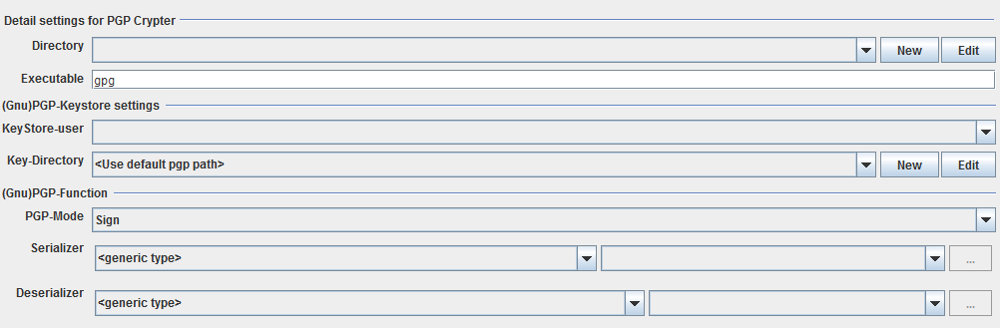

PGP Crypter

Topic content
Description
This channel is an adapter between Orchestra and the tool "pretty good privacy".
Purpose of object
Via this channel, Orchestra has this functions to do with messages:
•sign
•clearsign
•sign & encrypt
•encrypt
•decrypt
PGP is a tool which is used to securely communicate via messages. PGP uses public key encryption. The maintenance of these public and private keys can be done external via the tool PGP.
Configuration
The dialog to configure the PGP Crypter looks like:

Directory: Choose an appropriate environment entry.
Executable: The name of the pgp executable
KeyStore-user: Choose an appropriate user.
Key-Directory: Define the directory, in which PGP saves hs key ring data. As default, the default PGP directory is used.
PGP-Mode: Define, whoch PGP operation shall be done.
Serializer: Define a serializer that is used to passe the orchestra message to pgp
Deserializer: Define a de-serializer that receives the result from the pgp output
See also
To set up a user, go to Credentials
To choose a filepath, it is needed to create an environment entry